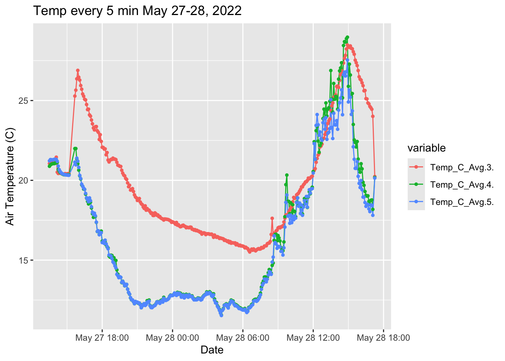
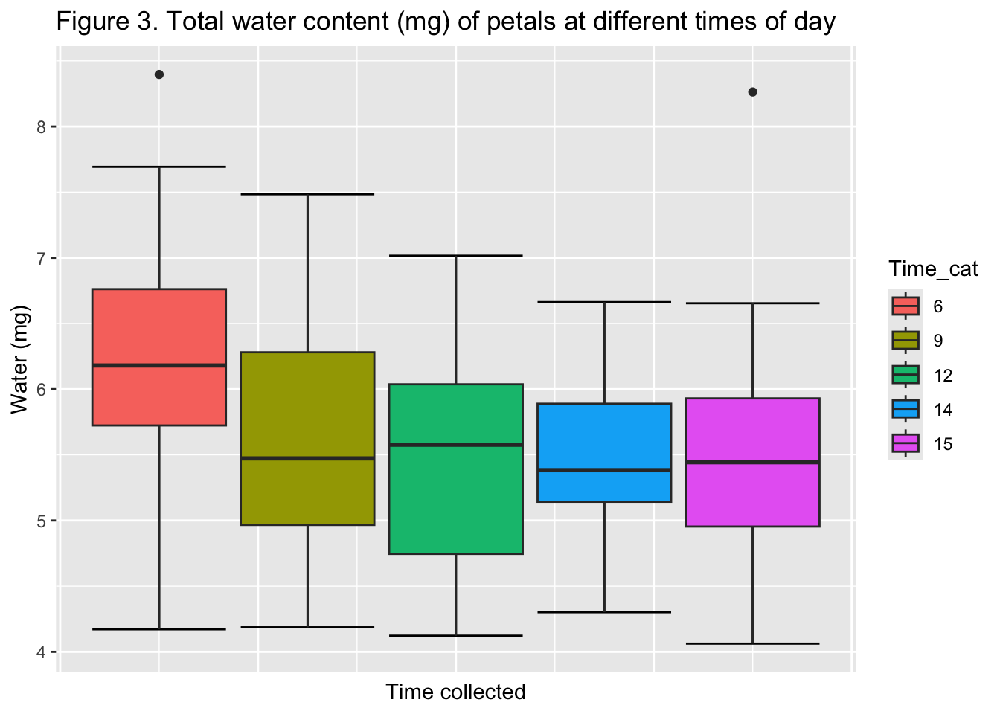

Differential Water Loss from Adaxial and Abaxial Petal Surfaces Suggests an Adaptive Role for Nyctinastic Movements in Eschscholzia californica
Kevin Simonin, Alyssa Miller, Annie Dang, Julia Rolls, Cameron Miller, Sean Britain, Kanchan Gautam, Griffin Wetzel, Lucy Gworek, Nicholas Rackard-Hilt and Gretchen LeBuhn
Abstract
Introduction
Plants employ diverse strategies to optimize reproductive success while managing resource costs. Flowers represent a substantial investment in reproduction, yet are unique among plant organs in their reliance on hydrostatic mechanisms rather than carbon-intensive structures for support [@niklas1992]. This relatively economical construction, combined with the general absence of stomata, presents unique challenges for water management in floral tissues.
In numerous species, flowers exhibit nyctinasty—rhythmic opening and closing movements that persist over multiple days. While the adaptive significance of these movements remains debated, mounting evidence suggests they may serve multiple functions, including pollinator attraction and protection from environmental stresses [@vandoorn2003]. We propose that nyctinastic movements may additionally function as a water conservation mechanism during the critical period of reproductive display.
Floral water relations differ fundamentally from those of leaves. While leaves regulate water loss through stomatal control, flowers primarily lose water through cuticular transpiration (Roddy & Dawson 2012; Teixido & Valladares 2014 ). The maintenance of turgor pressure, essential for floral display and function, depends entirely on the balance between water supply and unavoidable cuticular water loss (add reference). Despite the importance of understanding water relations in flowers, differential water loss across petal surfaces remains poorly characterized.
Nyctinastic movements show considerable variation in timing and duration across species, typically regulated by environmental cues such as light and temperature (add reference). These movements involve complex cellular mechanisms including ion transport and differential cell expansion, suggesting both energetic and water costs associated with repeated opening and closing.
Eschscholzia californica (California poppy) provides an ideal system for investigating the water conservation hypothesis of nyctinastic movements. This species exhibits pronounced daily flower opening in mid-morning and closing in mid-afternoon, with individual flowers persisting for three to five days. The large, bowl-shaped corolla presents extensive surface area to environmental factors that may influence water loss, including solar radiation and wind.
Here, we test the hypothesis that nyctinastic closure reduces water loss by comparing transpiration rates between adaxial and abaxial petal surfaces. We predict that the adaxial surface, which is protected during closure, will show higher rates of water loss than the abaxial surface, suggesting that flower closure serves to protect surfaces most vulnerable to water loss.
Methods
Eschscholzia californica (California poppy) is a widespread herbaceous plant native to the western United States, characterized by large, showy flowers that open during the day and close at night. Individual flowers persist for 4-5 days, with petals opening each morning and closing in the late afternoon or early evening. This nyctinastic behavior occurs even under constant light conditions, suggesting an endogenous rhythm that is entrained by environmental cues. The flowers lack a rigid support structure, instead relying on hydrostatic pressure to maintain their characteristic cup shape when open. During closure, the petals fold inward forming a tight spiral that completely encloses the reproductive structures. This daily cycle of opening and closing continues for three to five days after which the petals abscise and fruit development begins. The species’ adaptation to Mediterranean climates, where water availability can be unpredictable during the flowering season, makes it an ideal system for investigating water conservation strategies in flowers.
Ovary Temperature
On May 29-30, 2022, the temperature inside and outside the flower was measured using a Perfect Prime TL0201, 0.1mm diameter, K-Type Sensor Probe for K-Type thermocouple. Single probes were placed touching the external and internal surface of the petal as well as being inserted into the ovary. A fourth probe was placed adjacent to the flower to measure air temperature. Probes were left in for 24 hours and data was recorded on a CR-6.
Daytime Petal Water Content
To examine the effect of time of day and floral opening on water content of flowers, we sampled one Eschscholzia californica petal from each of 30 different flowers per date on June 23, 26th and 28th , July 6th and August 10, 2022. No more than two flowers were sampled per individual plant. Petals were held in a plastic container to minimize water loss until they could be weighted and photographed. In the lab, each petal was photographed on a blue background next to a post-it which we used to calibrate ImageJ. A clear plastic sheet the size of standard lined paper (21.6 x 27.9 cm) was placed over the petal to flatten the petal to standardize measurements of area. Each reference photo was uploaded to ImageJ to estimate petal area.
Petal samples were weighed individually on a Mettler Toledo AX204 balance. After individual weight was taken (“Wet Weight”), each petal was placed into a small coin envelope and dried in an Fisher Scientific Isotemp Standard Oven 600 series at 60℃ for at least 48 hours. After drying each individual, petal was weighed on the same balance to obtain the dry weight of each petal. Total water content was estimated as Wet weight - Dry Weight. Water content was estimated as Total Water Content/Dry weight. Water content per area was estimated as Total Water content/Petal area.
Petal Surface Conductance
In situ measurements of petal surface conductance were made on Eschscholzia californica plants from randomly selected locations within the greater San Francisco Bay area. Petal surface conductance measurements were taken from 54 individuals using a Li-Cor Li-600 Porometer/Fluorometer. For each plant sampled, one petal per poppy flower was randomly selected for six measurements. Three measurements were taken from the abaxial surface and three measurements were taken from the adaxial surface. Surface conductance measurements were taken during anthesis when flowers were fully opened. Collected data was then transferred from the porometer into a Microsoft Excel spreadsheet using the application Li-Cor Li-600 Software Version: 3.0.0. The spreadsheet was then converted into a comma separated values (csv) format for analysis using RStudio.
Petal Surface Area
All Eschscholzia californica flowers used for surface area measurements were sampled on the San Francisco State University campus grounds. 16 closed E. californica flowers were selected and marked to collect surface area measurements, as well as to return to when open. Closed flower measurements were taken between 7am-8:30am. Height and diameter measurements were taken using a standard ruler and caliper. Height was measured from the base of the receptacle to the tip of the petals. Diameter was measured at the widest part of the closed petal cone [add picture for reference]. Measurements were taken in inches and then later converted into cm2. The surface area of closed flowers were calculated using the formula for the surface area of a cone: A=rh2+r2. Calculation was done using RStudio.
Marked E. californica flowers were revisited when open to collect and measure open surface area. Open surface area measurements were made digitally. For each flower, each individual petal was removed from its base and placed on an [insert model of document scanner]. A sheet of glass was placed on top of the flower petals, flattening them to ensure the entire surface of the petals would be visible when scanning. A standard ruler was placed on the edge of the platen to be used as a standardized scale. Samples were scanned using the Canon IJ Scan Utility program for Windows. Images were analyzed for surface area using the program ImageJ through the distributor Fiji. Images were converted into a binary using the binary function, allowing for the pixels of the petal samples to be easily recognizable by the program. The scale of the image was set using the ruler, measuring 1 cm to equal 120.026 pixels. Using the polygon feature, the pixels of the petals were selected and analyzed to receive surface area in cm2.
Lifetime Petal Water Use
We created a lifetime petal water use model to represent the variances of water use of E. californica flowers depending on the duration of floral opening and closing throughout their lifespan: SA ᐧ gsw ᐧ VPD ᐧ Time. SA represents surface area (m^2), calculated above. Gsw represents mean surface conductance (mol m^-2 s^-1), obtained from the data collected from the Li-Cor Li-600 Porometer/Fluorometer. Average gsw was taken for both the abaxial and adaxial side of the flower petal. VPD, or vapor pressure deficit (kPa), was made as a constant of 1, removing the possibility of variability caused by differing VPD. Our time (s) variable used metadata collected from [insert source], finding that the average lifespan of E. californica flowers was 4 days. Within a 24 hour period, the flowers were closed for roughly 19 hours and open for 5 hours.
Statistical Analysis
All statistical analyses were done using RStudio.
Results
Ovary Temperature
Ovary temperatures were not significantly lower than ambient temperature.
Daytime Petal Water Content
Total water content of petals decline from the time of opening (6:00) to time of closing (15:00).
Does opening or closing affect petal water content?

Upon opening (06:00) and when petals close, water content per unit area is higher.
** References**